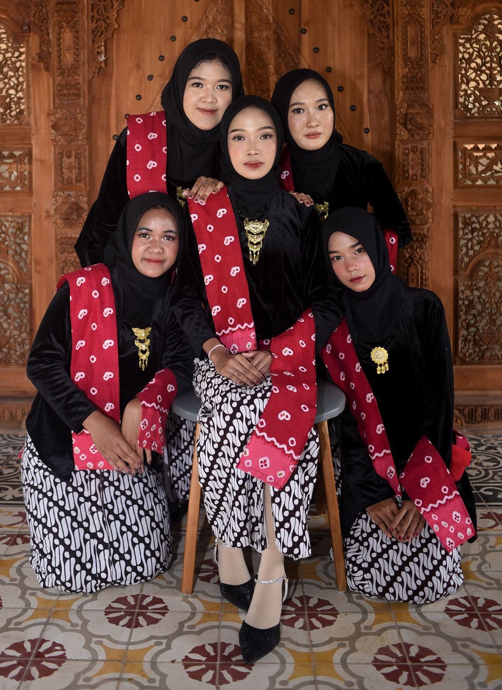
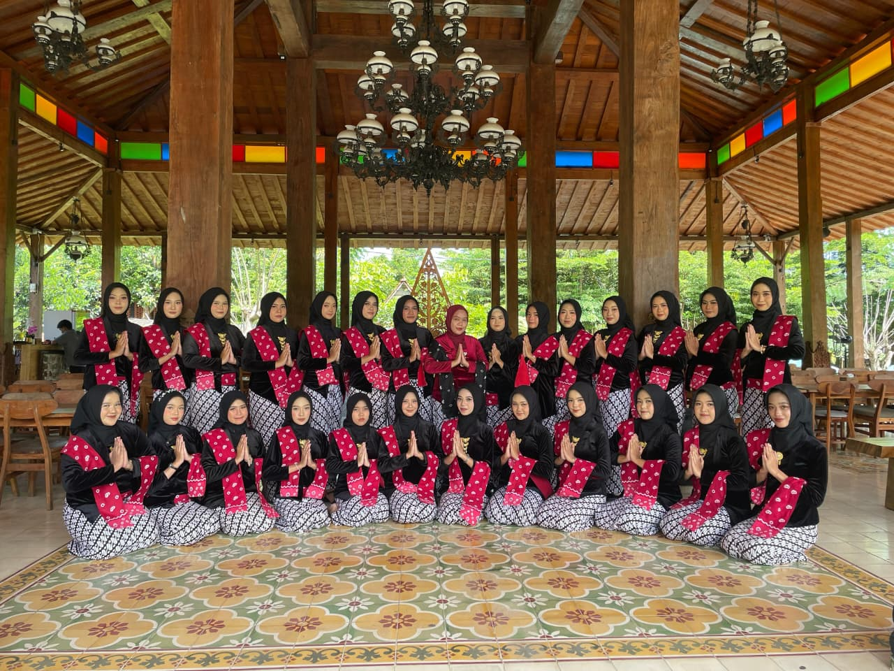
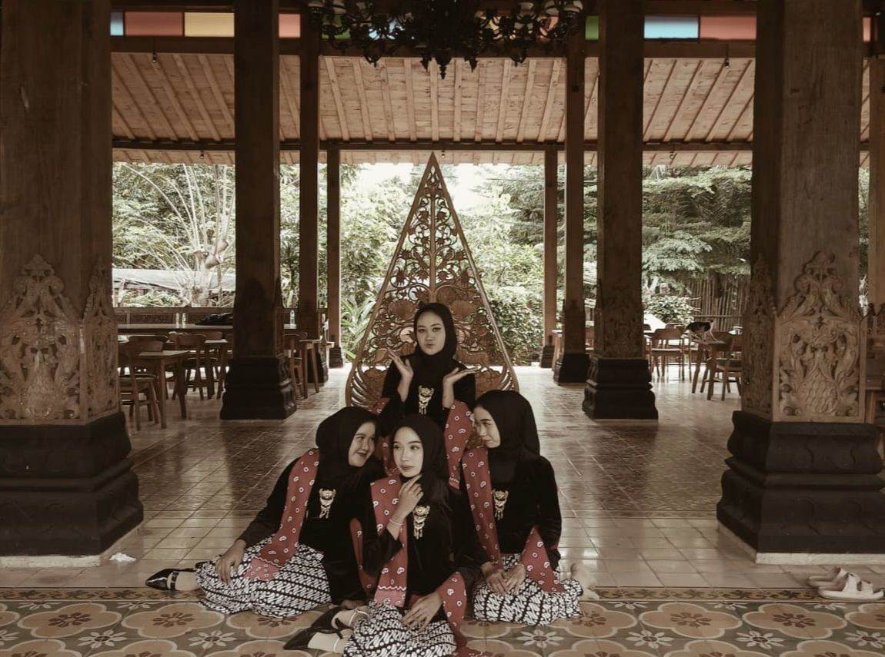

THE HERITAGE STORY: Kenangan Abadi dalam Balutan Kebaya ୨ৎ

Hari yang kami tunggu-tunggu akhirnya tiba. Setelah melihat keseruan kelas-kelas lain yang sudah lebih dulu mendapatkan sesi foto, kini giliran kelas kami yang mengisi lembaran buku tahunan. Kami sudah menyiapkan konsep ini sejak lama: Kebaya Jawa. Perpaduan warna hitam dan merah untuk kami, serta sentuhan hijau untuk guru kami, menciptakan harmoni yang sangat elegan di tengah restoran bernuansa Jawa yang asri.
Perjuangan dimulai sejak pagi buta. Aku sudah berada di rumah teman untuk makeup bersama MUA yang kami sewa. Rasanya seru sekali melihat kesibukan di pagi hari; ada yang sibuk memulas wajah, ada yang sedang bergelut memakai kain, hingga saling membantu memasang aksesori agar terlihat sempurna. Setelah semuanya siap, kami bergegas ke sekolah untuk berangkat bersama menuju lokasi.
Perjalanan menuju ke sana memang cukup menantang karena jalannya yang kurang bagus, tapi semua itu terbayar saat sampai. Suasananya sangat tenang, seperti kembali ke perkampungan yang asri. Sebelum mulai, kami melakukan sesi foto bersama sekelas. Setelahnya, kami beristirahat sejenak sambil menikmati ayam bakar yang nikmat dan jus alpukat segar. Rasanya benar-benar seperti sedang berlibur bersama keluarga besar.
Sesi foto utama pun dimulai. Sambil menunggu giliran per kelompok, kami menghabiskan waktu dengan "acara bebas"—mengambil foto sebanyak mungkin dengan HP masing-masing, bercerita, dan menikmati pemandangan. Setelah sesi kelompok dan peroranganku selesai, suasana makin pecah saat kami mulai karaokean dan joget bersama.
Lelahnya memakai kebaya seharian hilang seketika karena rasa seru yang luar biasa. Kami pulang dengan hati yang sangat senang. Dan sekarang, saat buku tahunan itu sudah berada di tanganku, aku menyadari satu hal. Di sana, aku menuliskan sebuah kutipan yang sangat berarti:
"Pada akhirnya, ini semua hanyalah permulaan." —Nadin Amizah ୨ৎ


